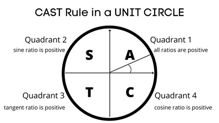
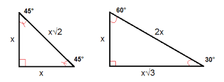

There are many important things to know about how to use a unit circle. First, you must understand how to create angles. The initial side of an angle is a fixed ray. The terminal side of an angle is a ray that moves either clockwise or counterclockwise (clockwise being negative and counterclockwise being positive) from the initial fixed ray. "The endpoint that the ray is rotated around to form the angle is called the vertex"("Angle"). Standard position for an angle is defined as the vertex being at the origin and the initial side being on the positive side of the x-axis.

Angles have measure greater than or equal to 0 degrees and less than or equal to 360 degrees. Angle measure is how we determine the name of the angle: Acute angle - 0° to 90°, Right angle - 90°, Obtuse angle - 90° to 180°

Theta (θ) is a Greek letter that we use to represent angles. It can be a degree measure or a radian measure. The Radian is a pure measure based on the radius of a circle. 1 Radian is about 57.2958 degrees. There are \(2\pi\) radians in every circle. Take the length of the radius of the circle and put it across the circumference of the circle; the corresponding angle from the initial ray to the terminal ray is 1 radian. The following question may help you visualize the relationship between a circle and radians. "Imagine you cut pieces of string exactly the length from the center to the circumference of a circle. How many pieces do you need to go once around the circle? The answer is \(2\pi\), or 6.283 pieces of string" ("Radians"). You can use the following website's animations to better visualize these concepts. Radians to Pi Translation

First, we need to develop the unit circle. Kahn Academy created a great video that explains some basics of creating the unit circle. Unit Circle Creation Video. Let's start with a cartesian coordinate system; draw a circle centered at the origin with radius 1 (That's why it's called a unit circle). Next label each of the points where the unit circle and the x and y axis intersect. You will then have the points labeled, (1,0), (0,1), (-1,0), (0,-1). Then label each of these with the proper degrees/radians: 0° (0 radians), 90° (\(\frac{\pi}{2}\)), 180° (\(\pi\)), 270° (\(\frac{3\pi}{4}\)), 360° (\(2\pi\) which overlaps with 0°/0 radians).
The following terminology will be important as we discuss the unit circle further. The coordinate system has a labeling method that helps others know which part of the grid we are referring to. The quadrant (or section of the coordinate system) that has positive x and positive y values is referred to as Quadrant 1. Traveling counter-clockwise to the quadrant that has negative x values and positive y values gives us Quadrant 2. Continuing this pattern, the next two quadrants are named Quadrant 3 and Quadrant 4. This is the base of a unit circle.
Many students have learned the unit circle purely by memorization. However, there is a better way. One journal article entitled Trigonometry: Comparing ratio and unit circle methods explained, "Before the 1960s, introductory trigonometry was taught in Victorian schools using the ratio method, where trigonometric functions are defined as ratios of sides of right-angled triangles. With the advent of "new maths", the unit circle method was introduced. This study explored differences between the two methods for teaching introductory trigonometry. Eight classes of students were randomly allocated to either teaching method. The ratio method was found to be much more effective, resulting in better performance and retention in trigonometry and algebra, and more favorable attitudes" (Kendal 1996). Due to its better retention, I will explain the unit circle using the ratio method.
The unit circle connects to trigonometry when we insert triangles into our circle. We do this by placing one point of the triangle at the origin, another at the circumference of the circle, and allowing the last point to reside at a right angle with the x axis. Since this is a unit circle, we know that the radius is 1. Therefore, the ray creating θ (with relation to the x axis) is the hypotenuse of this triangle, with a length of 1. We can label the ray on the x axis "a" and the height of the triangle "b". The point where the terminal ray and the unit circle intersects can be labeled as the coordinate (a,b).
You may be learned that a pneumonic called SOH CAH TOA can help us determine the ratios of values for each of the three main trigonometric functions for right triangles. The diagram below shows how this pneumonic related to these trigonometric functions. Sine, Cosine, and Tangent are the main functions used in Trigonometry and are based on a Right-Angled Triangle. Adjacent is adjacent (next to) to the angle θ (but it's a leg, not the hypotenuse). Hypotenuse is the long one that is opposite the right angle. The Opposite side refers to the side of the right triangle that is opposite the angle θ. Using these principles, we can better understand how the unit circle works.
The following list explains how angles are determined on a unit circle.
Cos(θ)=x value on unit circle
Sin(θ)=y value on unit circle
Tan(θ)=y/x or Sin(θ)/Cos(θ)
Now we will discuss why these are the relationships that are used in the unit circle. Kahn Academy made a great video that walks through how to solve for a triangle's sides using different trigonometric principles. This video can be found here: Solving the Unit Circle Using Trigonometry. We know that cos (θ)=adjacent/hypotenuse. Earlier, we defined the adjacent side of our right triangle to be a. This adjacent side of the triangle is along the x axis; we discussed a relationship earlier between cos(θ)=the x value on the unit circle. Now we can come to understand more deeply why cos(θ)=the x value. Our hypotenuse is 1 because it is the unit circle with radius 1. Thus, we have a/1. Sin(θ)=opposite/hypotenuse. Earlier we defined the opposite leg of the triangle to be b. So, we get b/1. The opposite side of the triangle is measuring the height of the y axis; we discussed a relationship earlier between sin(θ)=the y value on the unit circle. Similarly, we can come to understand more deeply why sin(θ)=the y value. Since cos(θ) represents the x value on the unit circle and sin(θ) represents the y value, we know that is coordinate point we named (a,b) could just as easily be written as (cos(θ), sin(θ)).
These principles can be shown in the following applets. These applets show how sine and cosine relate to angles being created around the unit circle:
Relationships Between the Unit Circle and Trigonometric Functions
Interactive Unit Circle and Trig
Desmos Graphing Circle and Sine and Cosine Waves
`Now, we can't use this pneumonic SOH CAH TOA for all right triangles on the unit circle-it only works for triangles with θ<90°. It doesn't make a lot of sense when θ is larger than 90° because SOH CAH TOA only works for triangles with right angles. θ and the right angle can't both be greater than or equal to 90° because each triangle can only sum to 180°.
However, we can use the principles we developed so far with our right triangle in Quadrant 1 and extend those patterns to work for the rest of the unit circle. In each of the other quadrants, we can still say that cos(θ)=the x coordinate where the terminal side of θ intersects the unit circle, that sin(θ)=the y coordinate where the terminal side of θ intersects the unit circle, and that tan(θ)=the y coordinate/the x coordinate where the terminal side of θ intersects the unit circle. The triangles in the first quadrant are just reflections onto the other quadrants.


To find the specific coordinates in radians (\(\frac{\pi}{6}\), \(\frac{\pi}{4}\), \(\frac{\pi}{3}\)), we will need to talk about properties of specific triangles. We will talk about a 45°-45°-90° triangle (which relates to radian \(\frac{\pi}{4}\)) and a 30°-60°-90° triangle (which relates to \(\frac{\pi}{6}\) and \(\frac{\pi}{3}\)). They each have very specific properties that will help us discuss how to find the proper coordinates for each section of the unit circle. The following link is an activity that helps guide students to discover these relationships. Special Right Triangle Properties Exploration Activity


First, we will discuss the 45°-45°-90° triangle; this is also known as an isosceles triangle. Its two legs are the same length, and its two angles are also the same (excluding the right angle). This means that we could set up the Pythagorean Theorem to explain how to solve for these side lengths that we will name x:
\[a^2+b^2=c^2 \rightarrow x^2+x^2=1^2 \rightarrow 2x^2=1 \rightarrow x^2=\frac{1}{2} \]
Our next step is to rationalize the denominator:
\[x=\frac{1}{\sqrt{2}} \rightarrow x=\frac{1}{\sqrt{2}}*\frac{\sqrt{2}}{\sqrt{2}} \rightarrow \frac{\sqrt{2}}{2}\]
Since we were discussing an isosceles triangle with the same length for each of the legs, we know that we just found both the x and y component. Thus, our coordinate is \(\left(\sqrt{2}/2, \sqrt{2}/2\right)\).
This relationship is true for an isosceles triangle in any quadrant (though the positive or negative signs preceding the x and y coordinate values vary depending on the quadrant you are talking about). Using the reflection principles discussed earlier, we can fill these values in for each \(\frac{\pi}{4}\) relationship going counter-clockwise around the unit circle. You can use the Geogebra applet at the bottom of this page to see where each of these values lie on the unit circle by selecting only the \(\frac{\pi}{4}\) checkbox.
Next, we can show a different relationship with a 30°-60°-90° triangle. First, let's review the properties of a 30°-60°-90° triangle. The side across from the 30-degree angle is the shortest leg of the triangle. The side across from the 60-degree angle is the longest leg of the triangle. Now we can discuss how the properties of a 30°-60°-90° triangle are created. We will derive this triangle by first using an equilateral triangle with side lengths all equal to 1. We will bisect this equilateral triangle, with our line crossing evenly through one of the 60° angles. This creates two 30°-60°-90° triangles, each with one side length equal to 1/2. The hypotenuse for each of the triangles will still equal 1. Now we need to use this information to solve for the bisecting line (the height). We can use the cos(60°)=opposite/1. Solving for the opposite side yields \(\frac{\sqrt{3}}{2}\). Thus, we can see that we have a 30°-60°-90° triangle with side lengths \(\frac{1}{2}\), \(\frac{\sqrt{3}}{2}\), and 1. Additionally, you could come to the same conclusion by using the Pythagorean Theorem.
In the unit circle, we can split angles into smaller sections. For example, we can split
the first quadrant into \(\frac{\pi}{6}\) and \(\frac{\pi}{3}\). Using the properties of
30°-60°-90° triangles that we just discovered, we can figure out the
coordinates for these smaller sections. \(\frac{\pi}{6}\) and \(\frac{\pi}{3}\) are the
radian versions of 30° and 60°. To find the coordinate point for the 30°
angle, we can line up a 30°-60°-90° triangle with side lengths \(\frac{1}{2}\),
\(\frac{\sqrt{3}}{2}\), and 1 so that it has the 30° angle created by the x axis and
the terminal ray. When we do that, we see that we get a length value of
\(x= \frac{\sqrt{3}}{2}\) and a height value of y=\(\frac{1}{2}\). This would yield the
coordinate point (\(\frac{\sqrt{3}}{2},\frac{1}{2}\)). The opposite values are true when we
line up that same triangle so the 60º angle is created by the x axis and the terminal ray.
You would get x=\(\frac{1}{2}\) and y=\(\frac{\sqrt{3}}{2}\). This would yield the coordinate
point (\(\frac{1}{2}\), \(\frac{\sqrt{3}}{2}\)). The following link has a fun activity that
students can do to check their understanding of this special triangle.
Special Right Triangle Check
Understanding Activity
The following video explains the properties of right triangles very clearly.
Remembering these relationships can be very challenging for students at first. One trick that may help is thinking about the size of \( \frac{1}{2} \) and \(\frac{\sqrt{3}}{2} \). Which one is bigger? is larger than \(\frac{1}{2}\). When trying to remember the x coordinate for a 30° angle, just look at the triangle drawn into the unit circle and think about which value should be larger-the x length or the y length. For the 30° angle, we can see that the triangle has a x value. This means that we should have \(\frac{\sqrt{3}}{2}\) as our x value and that the shorter side should be y=\(\frac{1}{2}\). This would give us the coordinate point (\(\frac{\sqrt{3}}{2}\),\(\frac{1}{2}\)). We can use the same thought process when thinking about the 60° angle. This angle has a larger y length so the y value should have the larger number (\(\frac{\sqrt{3}}{2}\)). This would give us the coordinate point (\(\frac{1}{2}\),\(\frac{\sqrt{3}}{2}\)). This same relationship is true for the entire unit circle except the positive and negative signs change depending on which quadrant you are in.
It is important to practice creating the unit circle; this aids in understanding and memorization. There are many fun games that students can use to help them learn the unit circle better.
The following link is a video game that allows multiple people to compete at filling out the unit circle values based on the prompts they receive.
Another fun game requires you to fill in the correct answer for the angles on the unit circle to launch a pie at an octopus! Let's hope you don't miss!
The following Geogebra applet can help students visualize the relationships between coordinate points, radians, degrees, and triangles. The following video discusses the properties about certain right triangles that we discussed earlier.
Top of page